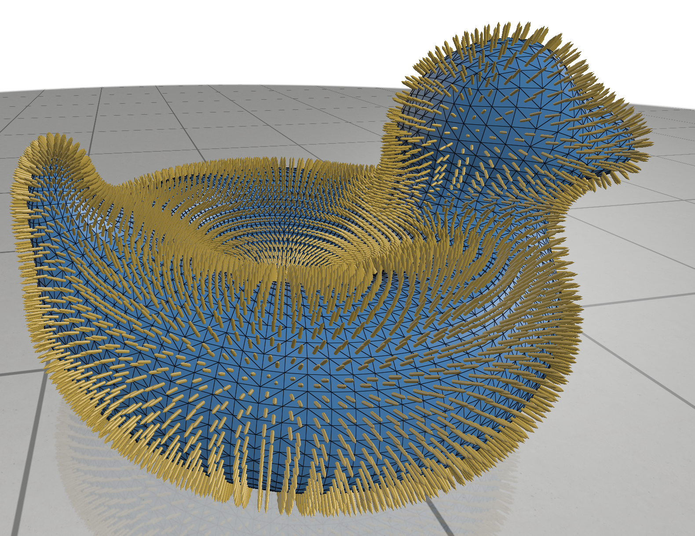

Vector Quantities
Visualize vector-valued data at the elements of a surface mesh.
Ambient vectors
Ambient vectors are “standard” vectors, which have X-Y-Z vector coordinates in world space.

SurfaceMesh::addVertexVectorQuantity(std::string name, const T& vectors)
Add a vector quantity defined at the vertices of the mesh.
vectorsis the array of vectors at vertices. The type should be adaptable to a 3-vector array offloats. The length should be the number of vertices in the mesh.vectorTypeindicates how to interpret vector data. The default setting is as a freely-scaled value, which will be automatically scaled to be visible. PassingVectorType::AMBIENTensures vectors have the proper world-space length.
Note: the inner vector type of the input must be 3D dimensional, or you risk compiler errors, segfaults, or worse. If you want to add 2D vectors (usually to a 2D mesh), addVertexVectorQuantity2D exists with the same signature. See 2D data.
SurfaceMesh::addFaceVectorQuantity(std::string name, const T& vectors)
Add a vector quantity defined at the faces of the mesh.
vectorsis the array of vectors at faces. The type should be adaptable to a 3-vector array offloats. The length should be the number of vertices in the mesh.vectorTypeindicates how to interpret vector data. The default setting is as a freely-scaled value, which will be automatically scaled to be visible. PassingVectorType::AMBIENTensures vectors have the proper world-space length.
Note: the inner vector type of the input must be 3D dimensional, or you risk compiler errors, segfaults, or worse. If you want to add 2D vectors (usually to a 2D mesh), addFaceVectorQuantity2D exists with the same signature. See 2D data.
Tangent vectors
Tangent vectors lie flat against the surface of the mesh. They are expressed as 2D vectors with X-Y coordinates in some basis frame at each mesh element.
Example: visualizing tangent vectors with geometry-central
#include "polyscope/polyscope.h" #include "polyscope/surface_mesh.h" polyscope::init(); // Load mesh std::unique_ptr<HalfedgeMesh> mesh; std::unique_ptr<VertexPositionGeometry> geometry; std::tie(mesh, geometry) = loadMesh(filename); // Register the mesh with polyscope psMesh = polyscope::registerSurfaceMesh("mesh", geometry->inputVertexPositions, mesh->getFaceVertexList(), polyscopePermutations(*mesh)); // Set vertex tangent spaces geometry->requireVertexTangentBasis(); VertexData<Vector3> vBasisX(*mesh); for(Vertex v : mesh->vertices()) { vBasisX[v] = geometry->vertexTangentBasis[v][0]; } polyscope::getSurfaceMesh("mesh")->setVertexTangentBasisX(vBasisX); // Make a vector field VertexData<Vector2> vecField = /* some field */ // Register the field polyscope::getSurfaceMesh("mesh")-> addVertexIntrinsicVectorQuantity("great vectors", vecField); polyscope::show();
Specifying the tangent basis
Tangent vectors are defined with respect to a coordinate frame at each vertex (resp., face). Before adding any tangent vector quantities, you probably need to tell Polyscope what this coordinate frame looks like. To do so, pass an array of the x-axis vectors (in 3D) for mesh element.
void SurfaceMesh::setVertexTangentBasisX(const T& vectors)
Specify the tangent coordinates at vertices, by giving the direction of the x-axis of the basis.
vectorsis an array of one 3D vector at each vertex. The type should be adaptable to a 3-vector array offloats. The length should be the number of vertices in the mesh.
Note: As always for functions that take 3D vector inputs, there is a setVertexTangentBasisX2D with the same signature, which expects 2D vector inputs. See 2D data.
void SurfaceMesh::setFaceTangentBasisX(const T& vectors)
Specify the tangent coordinates at faces, by giving the direction of the x-axis of the basis.
vectorsis an array of one 3D vector at each face. The type should be adaptable to a 3-vector array offloats. The length should be the number of faces in the mesh.
Note: As always for functions that take 3D vector inputs, there is a setFaceTangentBasisX2D with the same signature, which expects vector 2D inputs. See 2D data.
Adding intrinsic tangent vectors
In these function names, intrinsic vector is a fancy synonym for tangent vector, which indicates that the vectors lie in the surface itself, not the containing 3D space.
SurfaceMesh::addVertexIntrinsicVectorQuantity(std::string name, const T& vectors, int nSym=1)
Add a tangent vector quantity defined at the vertices of the mesh.
vectorsis the array of vectors at vertices. The type should be adaptable to a 2-vector array offloats. The length should be the number of vertices in the mesh.nSymis a symmetry order for visualization line field (n = 2) and cross field (n = 4), etc. If it is set to a non-1value, n distinct vectors will be displayed at each element. This function presumes a “power”-representation for symmetric fields, which the inputs result from raising symmetric vectors to the n’th power.
The vectors will be interpreted in the basis of SurfaceMesh::vertexTangentSpaces. These tangent spaces can be manually specified as described above.
SurfaceMesh::addFaceIntrinsicVectorQuantity(std::string name, const T& vectors, int nSym=1)
Add a tangent vector quantity defined at the faces of the mesh.
vectorsis the array of vectors at faces. The type should be adaptable to a 2-vector array offloats. The length should be the number of faces in the mesh.nSymis a symmetry order for visualization line field (n = 2) and cross field (n = 4), etc. If it is set to a non-1value, n distinct vectors will be displayed at each element. This function presumes a “power”-representation for symmetric fields, which the inputs result from raising symmetric vectors to the n’th power.
The vectors will be interpreted in the basis of SurfaceMesh::facesTangentSpaces. These tangent spaces can be manually specified as described above.
One forms
One forms are tangent vector-like quantities represented as integrated scalars along edges. They commonly arise, for example, as a gradient which is difference of scalar values at vertices.
SurfaceMesh::addOneFormIntrinsicVectorQuantity(std::string name, const T& data, const O& orientations)
Add a one-form quantity via a scalar at edges, which will be shown like a vector field.
datais the array of scalars at edges. The type should be adaptable to an array offloats. The length should be the number of edges in the mesh.orientations1-forms are defined with respect to an orientation of edges, so you need to tell Polyscope which direction your edges point in. This input is an array of booleans at edges. The type should be adaptable to an array ofchars (becausestd::vector<bool>is broken). The length should be the number of edges in the mesh. These booleans should betrueif the edge points from the lower indexed adjacent vertex to the higher-indexed vertex, and false otherwise.
Remember, before passing edge-valued data, be sure your indexing convention matches what Polyscope expects.